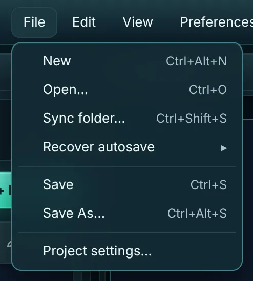
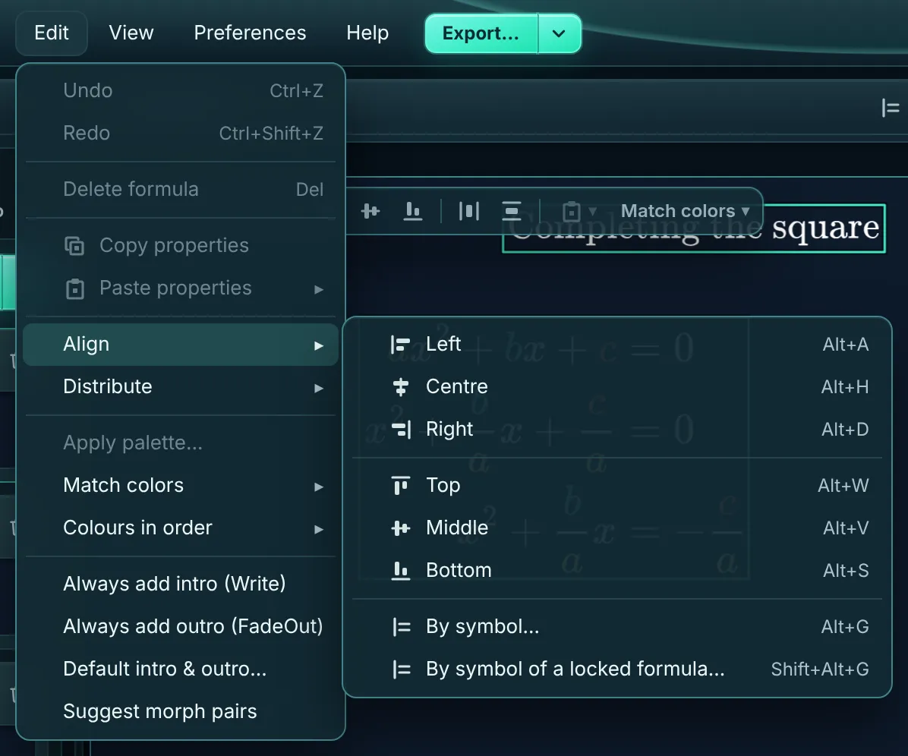
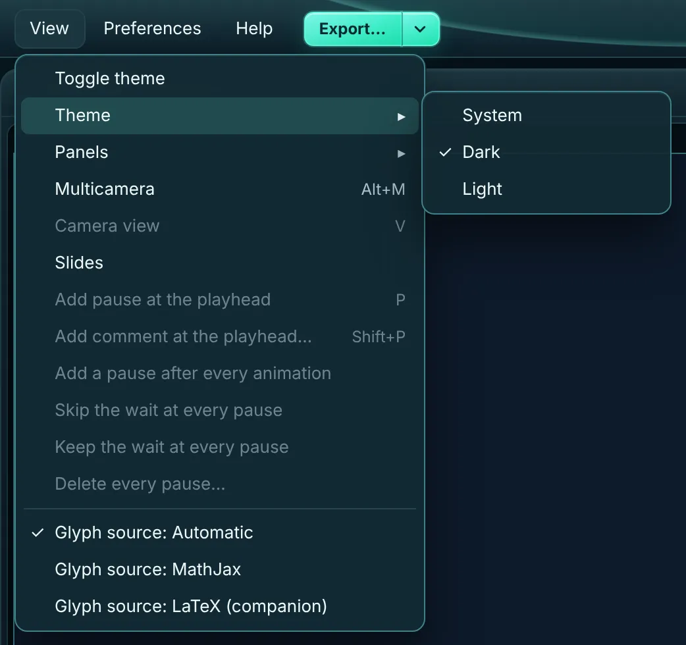
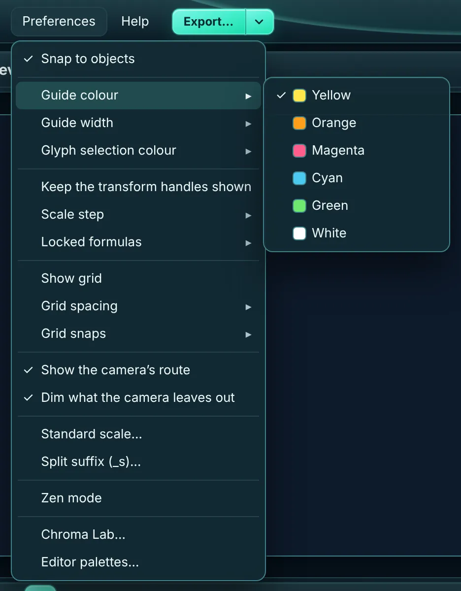
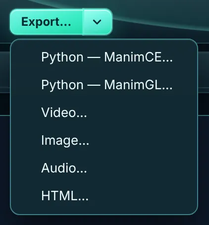
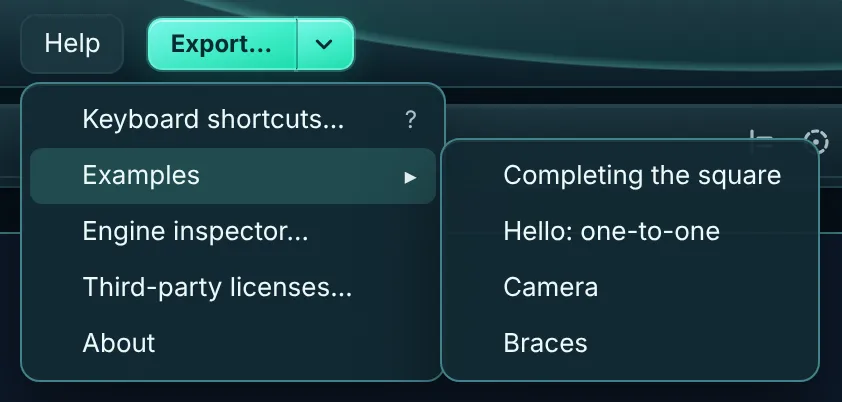
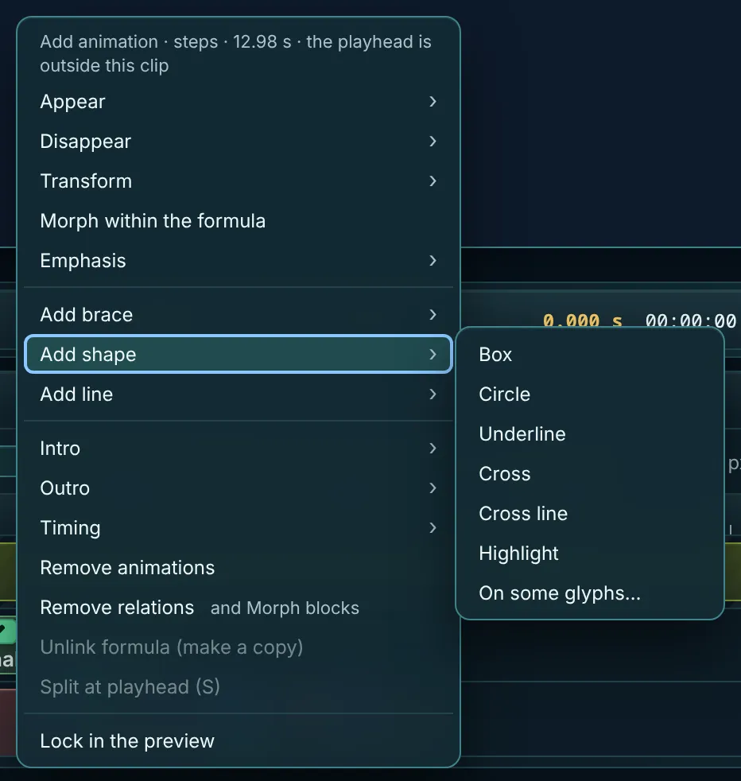

Every menu
Every menu of the menu bar and every right-click menu of the editor, entry by entry: its keys, what it does, and the page that teaches it.
The menu bar runs along the top of the window. Click a menu to open it, or focus its button and press ↓ to open it on its first entry and ↑ on its last; ← and → move along the bar, a letter goes to the next entry that starts with it, and Esc closes one level. An arrow at the end of an entry opens a submenu. A tick marks the choice in use, or a switch that is on. An entry is dimmed while nothing can use it yet: Undo before the first change, the entries of Align before something is selected. While a menu is open, of the bar or of a right-click, the keys you press are its own: no shortcut acts on what is under it until it closes, so an arrow does not move the playhead and Delete deletes nothing.
The tables below were read out of the app as it opens, with nothing selected, so the entries that act on a selection are dimmed there; a description says what an entry needs where it matters. Where an entry is a switch or a choice, the table says what it is by default. The keys are written for your system (Keyboard and mouse shortcuts has them all, by what you are doing). A few entries show only in a state the tables were not read in (a group in the Creator, glyphs picked in the Preview, glyphs selected on both sides of the relation editor): each is listed after the table of its menu.
The menu bar
Five menus, then the Export… button, then the name of the project, the Renderer badge and the theme button. The name and the badge are described in A tour of the interface.
File

| Entry | Keys | What it does | See |
|---|---|---|---|
| New | Ctrl+Alt+N | Starts an empty project. When the project has unsaved changes it asks first: Save, Don't save or Cancel. | Projects and files |
| Open… | Ctrl+O | Opens the Projects dialog: the projects of your synced folder as cards, with a search box and favourites. Other file… in that dialog is the browser’s own file picker, for a file that is not in the folder. | Projects and files |
| Sync folder… | Ctrl+Shift+S | Picks the folder that holds your projects, once. Chrome and Edge keep it and list it again each time; other browsers keep a snapshot of it until you sync again. | Projects and files |
| Recover autosave | Lists the autosaved work of other tabs that were closed, kept for a week, the five most recent, so you can bring it back. | Projects and files | |
| No autosave of another tab | What the submenu says when there is nothing to recover. | Projects and files | |
| Save | Ctrl+S | Saves the project to its file, and asks where when it has none. A browser without file access downloads a new file each time. | Projects and files |
| Save As… | Ctrl+Alt+S | Saves the project under a new name or in a new place; the picker starts in the synced folder when there is one. | Projects and files |
| Project settings… | Opens Project settings: name, target (ManimCE or ManimGL), resolution, frame rate, background, LaTeX preamble and duration. They belong to the project and are saved in its file. | Preferences |
Edit

The first group undoes and deletes, the next copies and pastes the properties of clips, then come aligning, colours, and last the editor preferences for new clips and Morph blocks. Those last four entries are kept in the browser, not in the project; see Preferences.
| Entry | Keys | What it does | See |
|---|---|---|---|
| Undo | Ctrl+Z | Takes back the last change. During a drag it cancels the drag first. | The interface |
| Redo | Ctrl+Shift+Z | Brings back what Undo took back. | The interface |
| Delete formula | Delete | Deletes the formula selected in the Creator, with its clips and their relations, as one undo step. It asks first, and the confirm button is held down. | Formulas |
| Copy properties | Takes the state of the one clip selected in the Preview as it is at the playhead: position, scale, rotation, flips, opacity, colour and glyph colours. | Timing tools | |
| Paste properties | Gives the copied properties to the selected clips, all of them but the position or one group. Each entry shows what it would paste; a paste is one undo step. | Timing tools | |
| All but position | Everything but the position. | Timing tools | |
| Transformation | Scale, rotation and flips. | Timing tools | |
| Appearance | Opacity and colour. | Timing tools | |
| Glyph colours | The colours of the glyphs, onto clips of the same formula only, since they go by glyph. | Timing tools | |
| Position | The position; several clips end up stacked on one point. | Timing tools | |
| Align | Lines up the clips selected in the Preview. A lone clip, or Shift held while you choose, aligns to the frame. | Align and distribute | |
| Left | Alt+A | Aligns on the outermost left edge of the selection. | Align and distribute |
| Centre | Alt+H | Aligns on the middle, horizontally. | Align and distribute |
| Right | Alt+D | Aligns on the outermost right edge. | Align and distribute |
| Top | Alt+W | Aligns on the outermost top edge. | Align and distribute |
| Middle | Alt+V | Aligns on the middle, vertically. | Align and distribute |
| Bottom | Alt+S | Aligns on the outermost bottom edge. | Align and distribute |
| By symbol… | Alt+G | A two-click mode: click the symbol to move, then the reference symbol; a compass asks on which side or corner it lands. | Align by symbol |
| By symbol of a locked formula… | Shift+Alt+G | The same, with the reference symbol on a formula locked in the Preview: it stays where it is and the other formula moves to it. | Align by symbol |
| Distribute | Spaces three or more selected clips evenly. | Align and distribute | |
| Horizontally | Ctrl+Alt+H | Evens out the gaps between the clips, left to right. | Align and distribute |
| Vertically | Ctrl+Alt+V | Evens out the gaps between the clips, top to bottom. | Align and distribute |
| Apply palette… | Previews what the active palette would change in the formulas and objects that exist, and applies it as one undo step. Off while no palette is active. | Palettes | |
| Match colors | The project’s lists of LaTeX patterns and the colours they give. Each list of the project is also an entry here, below the two commands. | Match colors | |
| Create match colors… | Opens the Match colors dialog on a new, empty list. | Match colors | |
| New from active palette… | Makes a list with four rows (variable, constant, operator and result), coloured from the active palette, for you to fill with patterns. | Match colors | |
| Colours in order | Copies colours from glyphs in the Preview, one by one, and pastes them in the same order onto other glyphs. | Colouring | |
| Copy… | Shift+C | Starts the copy: click the glyphs whose colours to copy, in order; Enter then pastes them on the glyphs you click next. | Colouring |
| Paste | Shift+V | Pastes the colours last copied once more, from the first one. Off until something was copied. | Colouring |
| Always add intro (Write) | New clips get the intro chosen in Default intro & outro… (the animation in brackets) instead of appearing at once. Off by default. | Intro and outro | |
| Always add outro (FadeOut) | New clips get the outro chosen in Default intro & outro… (the animation in brackets) instead of disappearing at once. Off by default. | Intro and outro | |
| Default intro & outro… | Chooses the animation, duration, easing and lag ratio of the intro and the outro that the two entries above give. | Intro and outro | |
| Suggest morph pairs | A new Morph block starts with the pairs Suggest finds, instead of none. Off by default. | Morph blocks |
View

| Entry | Keys | What it does | See |
|---|---|---|---|
| Toggle theme | Flips between the dark and the light theme, as the round, half-filled button at the end of the menu bar does. | The interface | |
| Theme | System follows your operating system as it changes; Dark and Light fix one. Default: Dark. Choices: System, Dark, Light. | The interface | |
| Panels | Shows or folds the Creator, the Animations panel and the Timeline to their title bars: a tick means the panel is shown. The layout remembers it. Off in the stacked layout of a narrow window, where nothing folds. All three are shown by default. Outside a text field, the key C does it for the Creator and A for the Animations panel. | The interface | |
| Multicamera | Alt+M | Gives the scene a camera, or takes it away: with it the timeline has a Camera row for its moves, and the Preview shows the world around the frame, with the camera drawn as a rectangle. It stays on while the camera has target cameras or moves: delete them first, and a notice says so. Off by default. | The camera |
| Camera view | V | With the multicamera on, looks through the camera at the playhead, as the video does, or goes back to the world with the camera’s rectangles. Greyed out without a camera. Off by default. | The camera |
| Slides | Turns the Slides mode on or off: pauses and comments on the scene’s time, where it rests, for the exported web page and the Python. It stays on while the project has a pause or a comment: delete them first, and a notice says so. Off by default. | Slides and HTML | |
| Add pause at the playhead | P | Adds a pause at the playhead, where the scene rests; where something animates, a notice says what runs there. Greyed out while the Slides mode is off. | Slides and HTML |
| Add comment at the playhead… | Shift+P | Adds a comment at the playhead, its words asked for first. Greyed out while the Slides mode is off. | Slides and HTML |
| Add a pause after every animation | Adds a pause where each animation ends and another follows, but in a rest that holds one already, as one undo step: then delete the ones you do not want. Greyed out while the Slides mode is off. | Slides and HTML | |
| Skip the wait at every pause | Makes every pause that has a wait to skip skip it: going on from it, the exported page and the rehearsal jump to where the next animation starts. The others stay as they are, and the notice counts them. One undo step; greyed out while the project has no pause. | Slides and HTML | |
| Keep the wait at every pause | Makes every pause keep its wait again, as one undo step. Greyed out while the project has no pause. | Slides and HTML | |
| Delete every pause… | Deletes every pause, with its note; the comments stay. It asks first, saying how many go, and its button is held down; one undo step brings them back. Greyed out while the project has no pause. | Slides and HTML | |
| Glyph source: Automatic | Formulas use the companion’s exact LaTeX glyphs when it is running, and MathJax otherwise. The default. | The companion | |
| Glyph source: MathJax | Forces MathJax, the browser’s own renderer, even when the companion is running. | Formulas | |
| Glyph source: LaTeX (companion) | Forces the companion’s exact LaTeX glyphs. Without the companion running, a formula shows an error that says so. | The companion |
Preferences

Preferences says more about each one, and lists the preferences that are set elsewhere.
| Entry | Keys | What it does | See |
|---|---|---|---|
| Snap to objects | A dragged formula sticks to the edges and centres of the others and of the frame. Hold Ctrl/⌘ after pressing to drag freely. On by default. | The Preview | |
| Guide colour | The colour of the guide lines a snapped drag shows in the Preview. Default: Yellow. Choices: Yellow, Orange, Magenta, Cyan, Green, White. | The Preview | |
| Guide width | How thick those guide lines are. Default: Thin. Choices: Thin, Regular, Thick. | The Preview | |
| Glyph selection colour | The colour of the glyphs picked with Alt in the Preview, and of the rectangle that picks them. Default: Yellow. Choices: Yellow, Orange, Magenta, Cyan, Green, White. | Picking glyphs | |
| Keep the transform handles shown | Keeps the transform handles on the selected clips without Shift held. Off by default. | The Preview | |
| Scale step | The step a corner drag’s scale snaps to. Custom… takes a number or a fraction, such as 1/3. Default: 0.05. Choices: 0.05, 0.1, 0.15, 0.2, Custom…. | The Preview | |
| Locked formulas | How opaque the Preview draws a formula locked in it. The Preview only: nothing exported is faded. Default: 40 %. Choices: 20 %, 30 %, 40 %, 50 %, 60 %, 80 %, 100 % (not faded). | The Preview | |
| Show grid | Draws a grid in the Preview, under the formulas, and makes a dragged formula snap to it (Ctrl/⌘ frees it). Never part of an export. Off by default. | The Preview | |
| Grid spacing | The spacing of the grid, in Manim units. Default: 1 unit. Choices: 2 units, 1 unit, 0.5 units, 0.25 units, 0.1 units. | The Preview | |
| Grid snaps | What the grid holds while you drag: the formula’s centre, or whichever of its edges is nearer to a line. Default: The formula's centre. Choices: The formula's centre, Its nearest edges. | The Preview | |
| Show the camera’s route | In the world view of a scene with a camera, draws the line with arrowheads that joins the camera’s frames in the order its moves run. On by default. | The camera | |
| Dim what the camera leaves out | In the world view of a scene with a camera, dims what the camera leaves out at the playhead. On by default. | The camera | |
| Standard scale… | The size new formulas and new LaTeX texts are born with (1 is Manim’s font size 48). In its dialog, Apply to all formulas and Apply to all texts give it to the ones that exist. | Formulas | |
| Split suffix (_s)… | The suffix that names the copy a split makes: a clip cut at the playhead (S) gives its second half a copy of its formula, named after it with this suffix. The brackets show the suffix in use; its dialog takes letters, digits and “_”, at most 16. | The timeline | |
| Zen mode | For small windows: the timeline becomes a column on the left, drawn vertical, and the Preview takes the rest; the Creator and the Animations panel open over it, side by side, from two buttons of a strip. It only rearranges the window. Off by default. | The interface | |
| Chroma Lab… | Opens Chroma Lab, the colour studio that comes inside the editor, to make a palette and send it to the editor. | Palettes | |
| Editor palettes… | Opens the palette library: import, make, edit, activate and delete palettes of named colour roles. | Palettes |
Export and the Export… button
The Export… button beside the menus exports Python for the target of the last Python export you opened (ManimCE at first). Its arrow lists the six exports; there is no Export menu in the bar, and this documentation writes an entry as Export ▸ Video….

| Entry | Keys | What it does | See |
|---|---|---|---|
| Python — ManimCE… | Exports the scene as a Python file for ManimCE. | Exporting | |
| Python — ManimGL… | Exports the scene as a Python file for ManimGL. | Exporting | |
| Video… | Renders the scene to a video file: in the browser, with the companion’s ffmpeg, or by Manim itself. | Video | |
| Image… | Writes the frame at the playhead as a PNG picture, the one a video shows there: at the project’s size or twice it, over the scene’s background or transparent. | Exporting | |
| Audio… | Exports the sound of the project as one audio file: WAV or WebM with Opus, and M4A where the browser can encode AAC. | Audio | |
| HTML… | Writes the scene as a web page that plays it live and stops at each pause of the Slides mode: a folder to work on and embed, its zip, or one file. | Slides and HTML |
Help

| Entry | Keys | What it does | See |
|---|---|---|---|
| Keyboard shortcuts… | ? | Shows the table of keyboard shortcuts and click gestures. | Shortcuts |
| Examples | Opens one of the example projects the app carries, as a file opens: it asks first about unsaved work, and the example becomes a project of yours without a file, so Save asks where it goes. | Projects and files | |
| Completing the square | The quadratic formula derived step by step. Try an example, in the Creator of a project with no formula, opens it too. | Projects and files | |
| Hello: one-to-one | Two formulas and the relation between them. | Projects and files | |
| Camera | The scene’s camera and its moves. | Projects and files | |
| Braces | Braces over parts of a sum, each with its label. | Projects and files | |
| Engine inspector… | Shows how a formula splits into glyphs with each renderer, MathJax and the companion’s LaTeX. | The companion | |
| Third-party licenses… | Lists the open-source components the app contains and opens their notices. | ||
| About | Shows the version of the app, the project file format version, the MathJax and companion versions and the licence. | Files and format |
Context menus
Right-click what you want to act on. The menu is for what is under the pointer; a menu of a selection acts on the whole selection. On the timeline, Shift+F10 or the Menu key opens the menu of the clip or block that has the keyboard focus. Esc closes it, and → and ← open and close a submenu. The tables read like the ones above; where one menu differs with what you click, a For column says when you see an entry.
A clip on the timeline
Right-click a clip. The menu starts with Add animation: its header names the clip and where a block you add starts: at the playhead when the playhead is on the clip, else at the time under the pointer, and then the header says the playhead is outside this clip. Then come the objects you can put on the clip, and last the clip’s own entries. On a locked track the menu opens with what would change the clip greyed out; its timing can still be copied.

| Entry | For | What it does | See |
|---|---|---|---|
| Appear | all | Adds a block that brings the glyphs in at the playhead, or at the time you right-clicked when the playhead is not on the clip. GrowArrow is for arrows. Choices: Write, Create, FadeIn, GrowArrow, GrowFromCenter, DrawBorderThenFill. | Animation blocks |
| Disappear | all | Adds a block that takes the glyphs out at that time. Choices: FadeOut, Unwrite, Uncreate, ShrinkToCenter. | Animation blocks |
| Transform | braces, lines and arrows | Adds the Transform of a brace, a shape, a line or an arrow: its place, size, colour and, for a line, its ends and stroke change over the block. | Animation blocks |
| Transform | formulas and texts, shapes | Adds a Transform block: the whole object moves, turns or rescales, or (a shape) goes to surround something else. | Animation blocks |
| Whole formula (keyframe) | formulas and texts | Adds a keyframe for the whole formula or text: position, scale, rotation, opacity and colour change over the block. | Animation blocks |
| Part of the formula | formulas and texts | Adds a block that moves, turns or recolours some of the glyphs of the formula while the rest stays. | Animation blocks |
| Transform | shapes | Adds the Transform of a brace, a shape, a line or an arrow: its place, size, colour and, for a line, its ends and stroke change over the block. | Animation blocks |
| To another formula or glyphs… | shapes | Carries the shape to surround another formula or other glyphs: pick the new target in the Preview, then confirm. | Shapes |
| Morph within the formula | formulas and texts | Adds a Morph block: a transformation between the glyphs of this same formula, for a derivation on one clip. | Morph blocks |
| Emphasis | all | Adds a block that draws attention at that time. A line or an arrow offers only Circumscribe, Flash and FocusOn. Choices: Indicate, Wiggle, Circumscribe, Flash, FocusOn. | Animation blocks |
| Add label | braces | Puts a label at the tip of the brace: a formula or a LaTeX text. Choices: Formula, Text (LaTeX). | Braces |
| Colour | braces, shapes | The colour of the brace or shape: the twelve Manim colours, the roles of the active palette, or any #RRGGBB typed in the field and applied. | Colouring |
| Direction | braces | Moves the brace to another side of what it spans. Choices: Below, Above, Left, Right. | Braces |
| Add brace | formulas and texts, shapes, lines and arrows | Puts a brace on the clip, on the side you choose. On a formula or a text, On some glyphs… opens a dialog to pick which glyphs it spans. Choices: Below, Above, Left, Right, On some glyphs…. | Braces |
| Add shape | formulas and texts, lines and arrows | Puts a shape around the clip. On some glyphs… picks which glyphs it surrounds. Choices: Box, Circle, Underline, Cross, Cross line, Highlight, On some glyphs…. | Shapes |
| Add line | formulas and texts, lines and arrows | Draws a line or an arrow that starts on this clip: a compass asks where on it, then one click puts the other end. Choices: Line, Dashed line, Arrow, Double arrow. | Lines and arrows |
| Intro | all | The animation the clip starts with, the current one ticked. None makes the formula appear at the clip’s start. Lines and arrows offer fewer; GrowArrow is for arrows. Choices: None (appear), Write, FadeIn, GrowFromCenter, DrawBorderThenFill, Create, GrowArrow. | Intro and outro |
| Outro | all | The animation the clip ends with, the current one ticked. None makes it disappear at the clip’s end. Choices: None (disappear), Unwrite, FadeOut, ShrinkToCenter, Uncreate. | Intro and outro |
| Timing | all | Copy when this clip starts and ends and how long its intro and outro are, or paste one of those onto this clip. | Timing tools |
| Copy timing | all | Copies the clip’s start, end, duration and intro and outro times. | Timing tools |
| Paste start | all | Moves the clip to start when the copied clip does. | Timing tools |
| Paste end | all | Moves the clip to end when the copied clip does. | Timing tools |
| Paste duration | all | Makes the clip last as long as the copied one, from where it starts. | Timing tools |
| Paste intro time | all | Gives its intro the length of the copied clip’s intro. | Timing tools |
| Paste outro time | all | Gives its outro the length of the copied clip’s outro. | Timing tools |
| Remove animations | all | Takes off the clip’s intro, its outro and its blocks, but the Morph ones. | Intro and outro |
| Remove relations | formulas and texts | Takes off the clip’s transformations of glyphs: its relations with other clips and its Morph blocks. | Relations |
| Unlink formula (make a copy) | formulas and texts | Gives this clip a copy of its formula of its own, so editing one no longer changes the other. Off, its tooltip saying why, for a formula’s only clip. | Timing tools |
| Split at playhead (S) | all | Cuts the clip in two at the playhead: the second half becomes a clip of a copy of its formula, that starts as the object is then. Off, its tooltip saying why, while the playhead is outside the clip or the track is locked; when something keeps the clip whole, a notice says what. | The timeline |
| Become | lines and arrows | Turns the line into another kind of line: it keeps its ends, its curve and its tips. Choices: Line, Dashed line, Arrow, Double arrow. | Lines and arrows |
| Reverse points start ⇄ end | lines and arrows | Swaps the start and the end of the line. | Lines and arrows |
| Curve | lines and arrows | Bends the line into an arc or a spline, or shapes the spline it has; copies the shape of its path, or gives it the copied one. | Lines and arrows |
| Arc | lines and arrows | Bends the line into an arc of a circle (Manim’s path_arc). | Lines and arrows |
| Spline points and handles | lines and arrows | Turns it into a spline with points and handles you can edit in the Preview. Once the line is a spline the entry reads Edit curve. | Lines and arrows |
| Copy path shape | lines and arrows | Copies the shape of the line’s path. | Lines and arrows |
| Paste path shape | lines and arrows | Gives the line the shape last copied. Off until something was copied. | Lines and arrows |
| Detach | lines and arrows | Frees one end of the line or both from the glyphs they are on; off when both are free already. | Lines and arrows |
| Detach | braces, shapes | Frees the brace or shape from what it hangs on: it stays where it is and no longer follows that clip. | Braces |
| Lock in the preview | all | The Preview then draws the clip and leaves it alone: a press goes through it to what is under it, and nothing done in the Preview moves it. | The Preview |
Several clips
With two or more clips selected, right-click one of them. The menu offers what the Creator offers their formulas, one brace over them all, one shape around them all, and the clips’ own Duplicate and Delete. Its first entry is Edit… when the clips are all of one formula and Edit together… when they are of several, and Paste path shape is there when a line is among them.
| Entry | For | What it does | See |
|---|---|---|---|
| Edit together… | clips of several formulas, a line among them | Opens the formulas of the selected clips in one editor, to set their scale or glyph colours together. | Organizing |
| Edit… | clips of one formula | Opens the formula of these clips in its editor. | Formulas |
| Add brace | all | Puts one brace over all the selected clips. Not offered when a brace is among them; off, its tooltip saying why, when the clips are never on screen together. Choices: Below, Above, Left, Right. | Braces |
| Add shape | all | Puts one shape around all the selected clips. Not offered when a brace or a shape is among them; off, its tooltip saying why, when the clips are never on screen together. Choices: Box, Circle, Underline, Cross, Cross line, Highlight. | Shapes |
| Apply match colors | all | Colours the glyphs of the selected clips’ formulas with one of the project’s match colour lists. | Match colors |
| Create match colors… | all | Opens the Match colors dialog on a new list (what the submenu offers while the project has none). | Match colors |
| Paste path shape | a line among them | Gives each line among the selected clips the shape of the path last copied. Off until something was copied that fits one of them. | Lines and arrows |
| Timing | all | Pastes a part of the copied timing onto every selected clip. Choices: Paste start, Paste end, Paste duration, Paste intro time, Paste outro time. | Timing tools |
| Unlink formula (make a copy) | all | Gives each formula of the selection a copy of its own, shared by its selected clips. | Timing tools |
| Split at playhead (S) | all | Cuts in two at the playhead the selected clips it is inside, the sounds among them too, as one undo step. Off while it is inside none of them, or only inside clips on locked tracks. | The timeline |
| Lock in the preview | all | Locks them all in the Preview, or unlocks them when they all are. | The Preview |
| Duplicate | all | Duplicates the selected clips on the timeline. | The timeline |
| Delete N clips | all | Deletes the selected clips as one undo step; the formulas stay in the Creator. When braces, shapes or lines attached to them would go too, it asks first. | The timeline |
An animation block
Right-click a block in the top half of a clip. What it offers depends on its kind: an Appear or a Disappear block changes its animation, an Emphasis block its effect, a Morph block opens its pairs. A block of an unfolded group has the group’s entries too. A block that starts with other blocks of its clip and lasts as long as they do also offers Group with the N blocks that run with it, which makes one group of them all.
| Entry | For | What it does | See |
|---|---|---|---|
| Change animation | Appear and Disappear blocks, a block that runs with others | Changes the animation of an Appear or Disappear block to another of the nine, the current one ticked. A block of a line lists only what a line takes. Choices: Appear · Write, Appear · Create, Appear · FadeIn, Appear · GrowFromCenter, Appear · DrawBorderThenFill, Disappear · FadeOut, Disappear · Unwrite, Disappear · Uncreate, Disappear · ShrinkToCenter. | Animation blocks |
| Change effect | Emphasis blocks | Changes the effect of an Emphasis block to another of the five, the current one ticked. A block of a line lists Circumscribe, Flash and FocusOn. Choices: Indicate, Wiggle, Circumscribe, Flash, FocusOn. | Animation blocks |
| Edit pairs… | Morph blocks | Opens the pair editor of the Morph block. | Morph blocks |
| Fold the group | blocks of an unfolded group | Draws the group of this block as one block again. | Block groups |
| Take out of the group | blocks of an unfolded group | Takes this block out of its group. | Block groups |
| Ungroup | blocks of an unfolded group | Undoes the group; its blocks stay. | Block groups |
| Group with the N blocks that run with it | blocks of an unfolded group, a block that runs with others | Makes one group of this block and the blocks of its clip that start with it and last as long; N is how many. In a block of an unfolded group the entry ends “with its group”. Shown when there are some. | Block groups |
| Duplicate | all | Makes a copy of the block next to it. A Morph block’s copy has no pairs. | Animation blocks |
| Duplicate for the other glyphs | Appear and Disappear blocks, Emphasis blocks, Transform blocks, blocks of an unfolded group, a block that runs with others | Makes a copy that animates the other glyphs of the formula, so every glyph is covered once. Not on a block of an arrow, which takes all of it. | Animation blocks |
| Split into runs | Appear and Disappear blocks, Emphasis blocks, Transform blocks, blocks of an unfolded group, a block that runs with others | Splits a block that names glyphs into one block per run of consecutive glyphs. Not on a block of an arrow, which takes all of it. | Animation blocks |
| Split… | Appear and Disappear blocks, Emphasis blocks, Transform blocks, blocks of an unfolded group, a block that runs with others | Opens the Split dialog to divide a block that names glyphs as you choose. Not on a block of an arrow, which takes all of it. | Timing tools |
| Delete… | all | Deletes the block, after a question whose confirm button is held down. | Animation blocks |
A group of blocks
A group of blocks is drawn as one block until you unfold it. Right-click it for its own menu. It offers Group with the N blocks that run with it too, when other blocks of the clip start with the group and last as long.
| Entry | What it does | See |
|---|---|---|
| Unfold | Shows the group’s blocks on lanes of their own. | Block groups |
| Ungroup | Undoes the group; its blocks stay. | Block groups |
| Group with the N blocks that run with it | Takes into the group the blocks of its clip that start with it and last as long; N is how many. Shown when there are some. | Block groups |
| Duplicate | Copies the whole group. | Block groups |
| Delete… | Deletes the whole group, after a question whose confirm button is held down. | Block groups |
A relation
Related clips are joined by an arrow, and the part of the target clip where the transformation happens is a band. Right-click the band.
| Entry | What it does | See |
|---|---|---|
| Edit pairs… | Opens the relation editor on this relation. | Relation editor |
| Choose a pair… | Edits the path of one pair in the Preview. A relation of up to five pairs lists them under the heading Edit path instead; from six on this entry opens a dialog with the relation’s diagram and a picture of each pair’s path. | Custom paths |
| Delete relation | Deletes the relation. | Relations |
An audio clip
Right-click a clip on an audio track. The menu is short, because a sound has no intro, outro, blocks or relations.
| Entry | What it does | See |
|---|---|---|
| Edit volume and trim… | Opens the editor of the clip: its trim and its volume curve. | Audio |
| Split at playhead (S) | Cuts the clip in two at the playhead. | Audio |
| Fade In | Makes the volume rise from silence over the first half second of the clip, or its first half when the clip is shorter than a second. | Audio |
| Fade Out | Makes the volume fall to silence over the last half second of the clip, or its second half when the clip is shorter than a second. | Audio |
| Timing | Copy or paste when the clip starts and ends. A sound has no intro or outro. | Timing tools |
| Copy timing | Copies the clip’s start, end and duration. | Timing tools |
| Paste start | Moves the clip to start when the copied clip does. | Timing tools |
| Paste end | Moves the clip to end when the copied clip does. | Timing tools |
| Paste duration | Makes the clip last as long as the copied one. | Timing tools |
| Duplicate | Duplicates the clip, or the clips that are selected. | Audio |
| Delete | Deletes the clip, or the clips that are selected. | Audio |
A clip in the Preview
Right-click a formula, text or object in the Preview. Copy properties takes the clip under the pointer, and each section of the menu opens as a submenu beside its entry. If you picked glyphs of the clip with Alt, Add brace and Add shape work on those glyphs. The clip’s own entries are the same as on the timeline, but the Preview’s menu has no Timing and no Lock in the preview. On a brace it offers Add label instead of the brace, shape and line entries; on a shape, Transform to another formula or glyphs… and no Add shape.
| Entry | For | What it does | See |
|---|---|---|---|
| Copy properties | all | Copies the properties of the clip under the pointer. | Timing tools |
| Paste properties | all | Pastes the copied properties onto the selected clips, all but the position or one group. Choices: All but position, Transformation, Appearance, Glyph colours, Position. | Timing tools |
| Align | all | Lines up the selected clips; Align by symbol… starts the two-click mode. Choices: Align left, Align centre, Align right, Align top, Align middle, Align bottom, Align by symbol…. | Align and distribute |
| Distribute | all | Spaces three or more selected clips evenly. Choices: Distribute horizontally, Distribute vertically. | Align and distribute |
| Add label | a brace | Puts a label at the tip of the brace under the pointer: a formula or a LaTeX text. Choices: Formula, Text (LaTeX). | Braces |
| Colour | a brace, a shape | The colour of the brace or shape: the twelve Manim colours, the roles of the active palette, or any #RRGGBB typed in the field and applied. | Colouring |
| Direction | a brace | Moves the brace to another side of what it spans. Choices: Below, Above, Left, Right. | Braces |
| Add brace | a formula or text, a shape | Puts a brace on the clip under the pointer, or on the glyphs picked on it with Alt, or over all the selected clips. Choices: Below, Above, Left, Right, On some glyphs…. | Braces |
| Transform to another formula or glyphs… | a shape | Carries the shape to surround another formula or other glyphs: pick the new target in the Preview, then confirm. | Shapes |
| Add shape | a formula or text | Puts a shape around the clip under the pointer, or around the glyphs picked on it, or around all the selected clips. Choices: Box, Circle, Underline, Cross, Cross line, Highlight, On some glyphs…. | Shapes |
| Add line | a formula or text, a shape | Draws a line or an arrow that starts on this clip: a compass asks where on it, then one click puts the other end. Choices: Line, Dashed line, Arrow, Double arrow. | Lines and arrows |
| Intro | all | The animation the clip starts with, the current one ticked. Choices: None (appear), Write, FadeIn, GrowFromCenter, DrawBorderThenFill, Create. | Intro and outro |
| Outro | all | The animation the clip ends with, the current one ticked. Choices: None (disappear), Unwrite, FadeOut, ShrinkToCenter, Uncreate. | Intro and outro |
| Remove animations | all | Takes off the clip’s intro, outro and blocks, but the Morph ones. | Intro and outro |
| Remove relations | a formula or text | Takes off the clip’s relations and Morph blocks. | Relations |
| Unlink formula (make a copy) | a formula or text | Gives this clip a copy of its formula of its own. | Timing tools |
| Split at playhead (S) | all | Cuts the clip in two at the playhead: the second half becomes a clip of a copy of its formula. | The timeline |
| Detach | a brace, a shape | Frees the brace or shape from what it hangs on: it stays where it is and no longer follows that clip. | Braces |
| Apply match colors | all | Colours the glyphs of the selected clips’ formulas with a match colour list. Choices: Create match colors…. | Match colors |
| Copy colours in order… | all | Starts Colours in order: click glyphs whose colours to copy, in order. | Colouring |
| Paste colours in order | all | Pastes the colours last copied, in order, from the first one. Off until something was copied. | Colouring |
Glyphs picked in the Preview
Right-click the ink of a glyph you picked with Alt. The menu acts on the picked glyphs. Colour holds the swatches, the Hex field and Clear colour of the glyph view’s menu, and Add brace and Add shape put one on the picked glyphs. For glyphs of one formula the menu also has Hide at the start, Show at the start, On some glyphs… under Add brace and Add shape, and these:
| Entry | What it does | See |
|---|---|---|
| Copy colour to clipboard | With one glyph picked: puts the colour it is seen in on the system clipboard, as #RRGGBB. The entry shows that colour. | Colouring |
| Copy colour sequence | Takes the own colours of the picked glyphs, in order. | Colouring |
| Paste colour sequence | Gives the colours copied to the picked glyphs, when they are the same symbols. The line under it says what would be pasted, or why it cannot be. | Colouring |
Empty space in the Preview
Right-click where there is nothing. Add line: choose a kind and click where the line starts and where it ends. With the multicamera on, the menu also adds to the camera.
| Entry | For | What it does | See |
|---|---|---|---|
| Line | all | Draws a line: click where it starts, then where it ends. | Lines and arrows |
| Dashed line | all | Draws a dashed line the same way. | Lines and arrows |
| Arrow | all | Draws an arrow, with its tip at the end. | Lines and arrows |
| Double arrow | all | Draws a double arrow, with a tip at each end. | Lines and arrows |
| Add target camera here | with the multicamera on | Adds a target camera centred where you clicked, as large as the camera is at the playhead, and selects it. | The camera |
| Add camera move | with the multicamera on | Adds a camera move at the playhead, a second long, where the scene is free; the playhead goes to its end, where the camera is then put. | The camera |
The camera in the Preview
With the multicamera on, right-click a rectangle of the camera by its edge or its name: a target camera, the camera itself, the frame of 0 s or the frame a move goes to on its own.
| Entry | For | What it does | See |
|---|---|---|---|
| Move camera here | a target camera | Adds a camera move to this target camera, at the playhead. | The camera |
| Rename… | a target camera | Asks for the target camera’s new name. | The camera |
| Delete (Del) | a target camera | Deletes the target camera, after a question when moves go to it: those moves stay, each going to a frame of its own where the target camera was. | The camera |
| Add target camera here | the camera | Adds a target camera in the frame of this rectangle. | The camera |
| Add camera move | the camera | Adds a camera move at the playhead, a second long, where the scene is free. | The camera |
The Camera row of the timeline
Right-click a move of the Camera row, or the row where it has none.
| Entry | For | What it does | See |
|---|---|---|---|
| Isolate in the Preview | a camera move | Leaves the rectangle of the frame this move goes to as the only one that answers the pointer in the Preview, for frames that lie one over another. Stop isolating ends it. | The camera |
| Duplicate (Ctrl+D) | a camera move | Copies the move into the first place after it with room for its whole length. | The camera |
| Delete (Del) | a camera move | Deletes the move. | The camera |
| Add camera move here | the Camera row | Adds a camera move at the time you clicked, a second long, where the scene is free. | The camera |
The ruler in the Slides mode
With the Slides mode on, right-click the ruler (Slides and the HTML page). Off, the ruler has no menu.
| Entry | For | What it does | See |
|---|---|---|---|
| Add pause here (time) | all | Adds a pause at the time clicked, on a frame; with Snap on, pulled onto the playhead or the edge of the zone when they are near. Greyed out where something animates, and a line says what runs there. | Slides and HTML |
| Add comment here… | all | Adds a comment there, its words asked for first. Greyed out where something animates. | Slides and HTML |
| Add a pause after every animation | all | Adds a pause where each animation ends and another follows, but in a rest that holds one already, as one undo step. On the menu wherever it is opened. | Slides and HTML |
| Skip the wait at every pause | all | Makes every pause that has a wait to skip skip it, as one undo step; the others stay as they are. On the menu wherever it is opened; greyed out while the project has no pause. | Slides and HTML |
| Keep the wait at every pause | all | Makes every pause keep its wait again, as one undo step. On the menu wherever it is opened; greyed out while the project has no pause. | Slides and HTML |
| Delete every pause… | all | Deletes every pause, with its note; the comments stay. It asks first, saying how many go, and its button is held down; one undo step brings them back. On the menu wherever it is opened; greyed out while the project has no pause. | Slides and HTML |
A pause or a comment
Right-click a pause or a comment on the ruler, or press Shift+F10 while it has the keyboard focus. The menu’s header says what the mark is and when.
| Entry | For | What it does | See |
|---|---|---|---|
| Edit note… | a pause | Writes the note of the pause, for whoever presents; emptied, the note goes. A pause without one reads Add a note…. | Slides and HTML |
| Skip the wait after it | a pause | A pause’s box: going on from it, the exported page and the rehearsal jump over the rest that follows, to where the next animation starts. Greyed out, with a line that says why, where there is nothing to skip. One undo step. | Slides and HTML |
| Edit comment… | a comment | Writes the words of the comment; a comment is not kept without them. | Slides and HTML |
| Delete (Del) | all | Deletes the mark, as one undo step. | Slides and HTML |
The end of a line
Select a line or an arrow and right-click the handle at one of its ends.
| Entry | What it does | See |
|---|---|---|
| Detach | Frees this end from the glyphs it is on. Off when it is free already. | Lines and arrows |
| Change its point… | Opens the compass to choose another point of what the end is on. | Lines and arrows |
In the Creator
Right-click a card of the list or the blocks. The menu acts on the selected formulas: a right-click on a card outside the selection selects that card first. Its entries depend on what is selected (Edit… for one formula, Edit together… for several, the group entries) and on whether the formulas can take match colours.
| Entry | For | What it does | See |
|---|---|---|---|
| Edit together… | several formulas, a group | Opens the selected formulas in one editor: one scale and glyph colours for all. | Organizing |
| Edit… | one formula | Opens the formula in its editor. | Formulas |
| Add to the timeline | all | Puts a clip of each selected formula on the timeline at the playhead, or in the region when one is marked on the ruler. | The timeline |
| Rename group | a group | Renames the group. | Organizing |
| Ungroup | a group | Undoes the group; its formulas stay. | Organizing |
| Group | several formulas | Makes a group of the selected formulas, in the Creator’s list. | Organizing |
| Apply match colors | all | Colours the glyphs of the selected formulas with one of the project’s match colour lists. | Match colors |
| Create match colors… | all | Opens the Match colors dialog on a new list (what the submenu offers while the project has none). | Match colors |
| Duplicate | all | Makes a copy of each selected formula, under the next free name, right after the original. | Organizing |
| Delete… | all | Deletes the selected formulas with their clips and relations, as one undo step, after a question whose confirm button is held down. With several selected it says how many: Delete N formulas…. | Formulas |
With groups in the project, the menu of selected formulas that is not opened on the row of a group can have two more entries:
| Entry | What it does | See |
|---|---|---|
| Add to group | A submenu of the groups there are: puts the selected formulas in the one you choose. Shown while one of them is in no group. | Organizing |
| Remove from group | Takes the selected formulas out of their groups; a group left without formulas goes. Shown while one of them is in a group. | Organizing |
The arrow of + New beside the button is a menu of its own:
| Entry | What it does | See |
|---|---|---|
| Formula | A new formula, written in LaTeX math. | Formulas |
| Text (LaTeX) | A new LaTeX text: prose with formulas between dollar signs. | Texts |
| Text (font) | A new font text: plain text in any font, shaped by the companion. | Texts |
On glyphs and pairs
In the formula editor’s glyph view, right-click a glyph for what acts on the selected glyphs. In the relation editor, right-click a glyph for the menu of the pairs it is in.
| Entry | For | What it does | See |
|---|---|---|---|
| Colour swatches | a glyph in the formula editor | The twelve Manim colours, then the roles of the active palette: one click colours what the menu acts on. | Colouring |
| Apply | a glyph in the formula editor | Colours the selected glyphs with the #RRGGBB typed in the field above it. | Colouring |
| Clear colour | a glyph in the formula editor | Gives the selected glyphs back the colour of the whole formula. | Colouring |
| Hide at the start | a glyph in the formula editor | Hides the selected glyphs at the start of the clip, so that an Appear block can bring them in later. | Animation blocks |
| Show at the start | a glyph in the formula editor | Shows glyphs that were hidden at the start. | Animation blocks |
| Inherit: Transform | a pair in the relation editor | The pair takes the style of the relation. | Relations |
| Transform | a pair in the relation editor | The glyph moves from the source to the target. | Relations |
| Copy (source stays) | a pair in the relation editor | A copy of the source glyph moves to the target; the source stays. | Relations |
| Fade transform | a pair in the relation editor | The source glyph fades out as the target glyph fades in (Manim’s FadeTransform). | Relations |
| Fade copy (source stays) | a pair in the relation editor | A copy of the source glyph fades out as the target glyph fades in; the source stays. | Relations |
| Edit path… | a pair in the relation editor | Shapes the path of this pair in the Preview. | Custom paths |
| Delete link… | a pair in the relation editor | Deletes the link of the selected glyphs, after a question. | Relation editor |
The menu of the relation editor has more entries in two cases: with glyphs selected on both sides the link comes first, and a pair of several sources onto one target, or one whose target other pairs bring too, can be taken apart or joined. The pair editor of a Morph block has the same menu.
| Entry | What it does | See |
|---|---|---|
| Link as Transform, Link as Copy, Link as Fade transform, Link as Fade copy | Links the selected glyphs as a pair of that style. A style they cannot take is greyed out, with the reason under it. Onto targets that a pair brings already, the menu offers Join pair N instead, and Separate pair as … for a pair of its own onto them. | Relation editor |
| Split into separate pairs | Takes a pair of several sources onto one target apart: one pair for each source, each with the style it played and the path it followed. | Relation editor |
| Join into one pair | Puts back into one the pairs that bring the same target. Greyed out, with the reason under it, when one pair could not play what they play. | Relation editor |